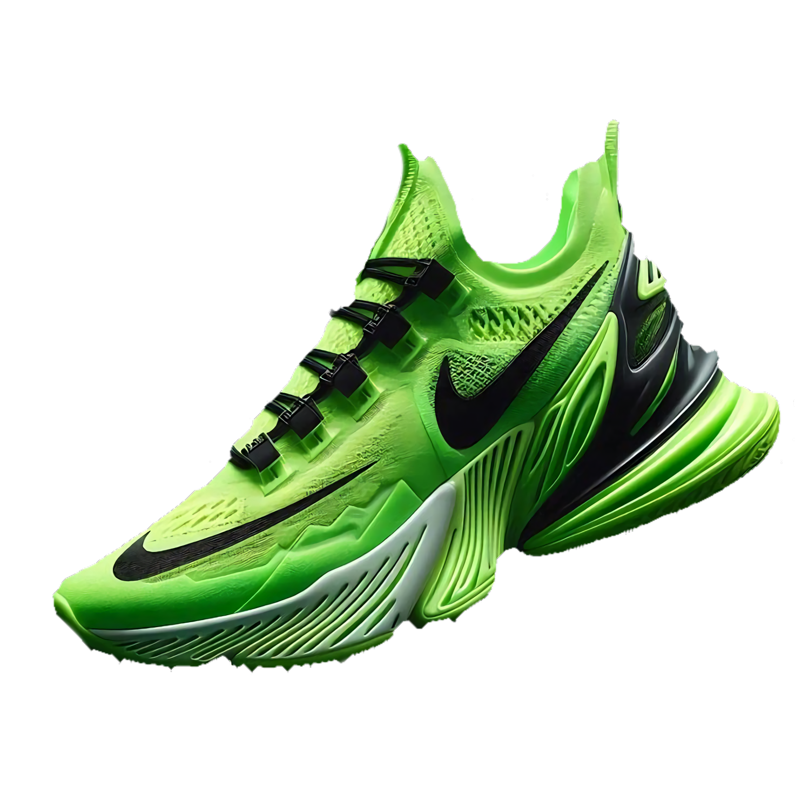
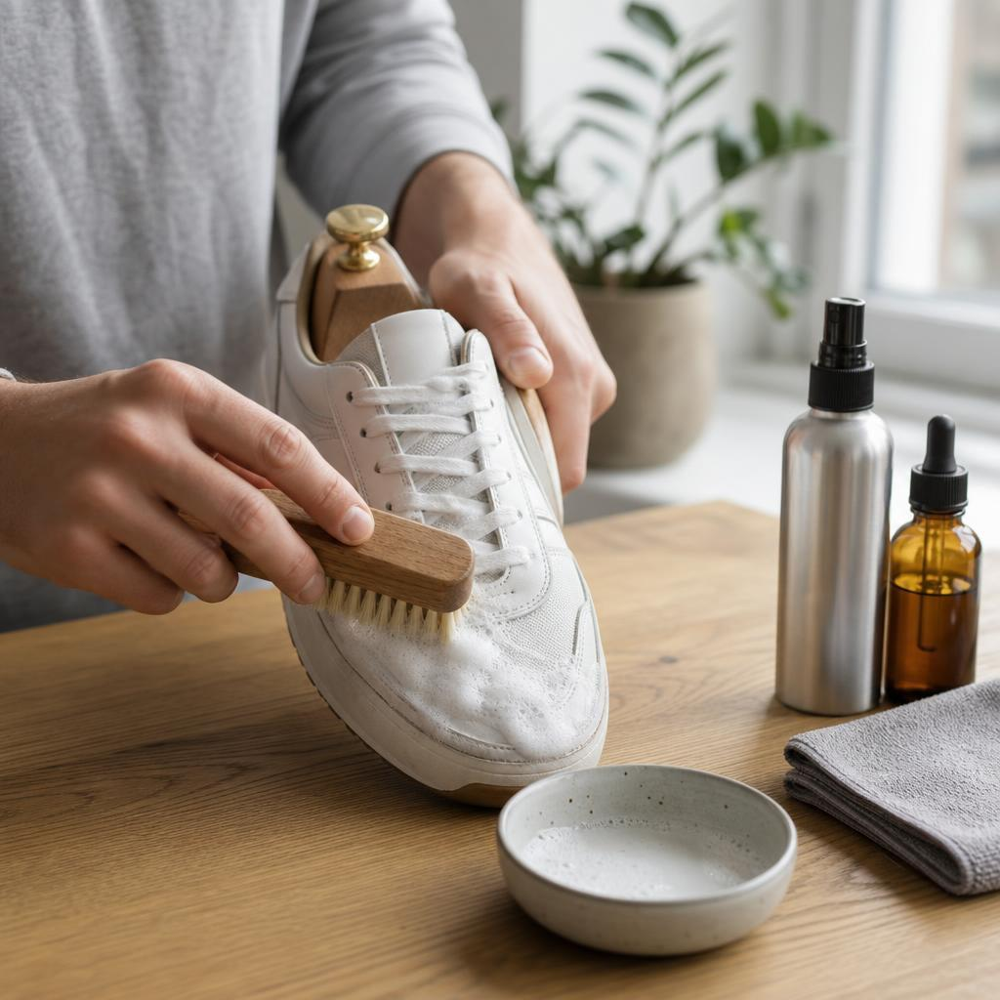
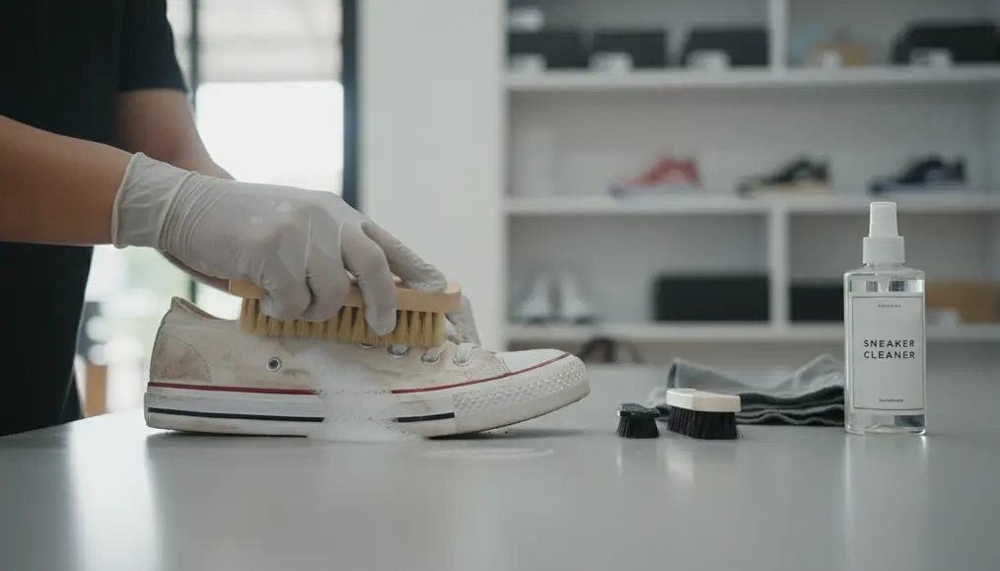
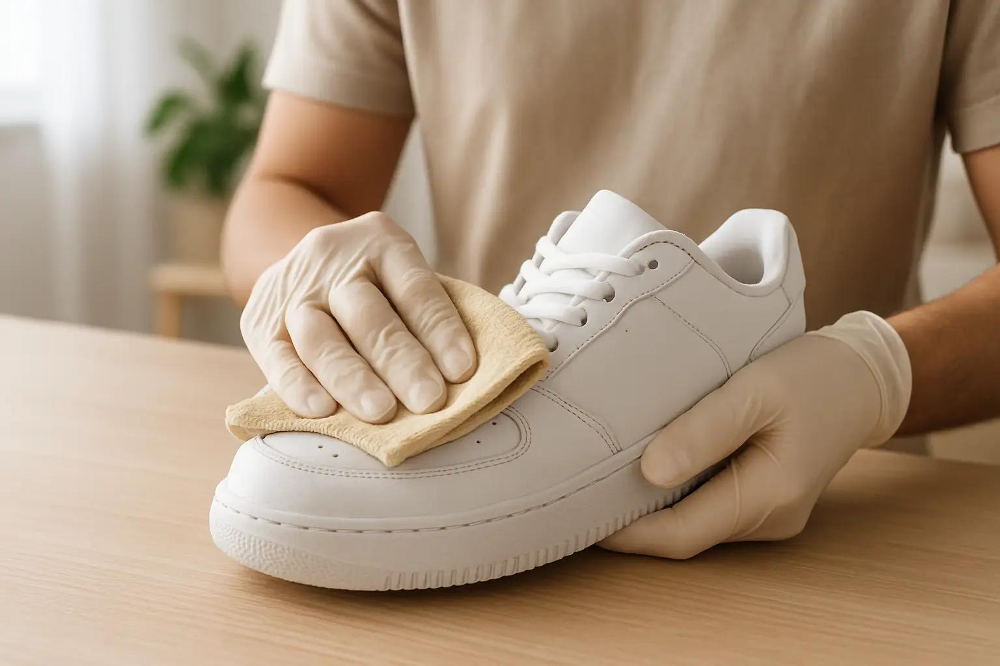

Sepatu kotor bikin penampilan kurang maksimal? Serahkan perawatannya kepada kami. Nikmati sepatu yang lebih bersih, terawat, dan siap menemani setiap langkahmu.
Pesan

Layanan pembersihan bagian luar sepatu untuk menghilangkan debu dan kotoran ringan agar sepatu kembali bersih dan terlihat lebih terawat.

Pembersihan sepatu secara lebih menyeluruh, mulai dari bagian luar hingga bagian lain yang memerlukan perawatan ekstra, sesuai jenis dan material sepatu.

Layanan pembersihan praktis untuk kamu yang memiliki waktu terbatas. Cocok untuk membersihkan kotoran ringan agar sepatu siap digunakan kembali dalam waktu singkat.
Kami mengutamakan kualitas dalam setiap proses pembersihan, dengan penanganan yang teliti dan metode yang disesuaikan dengan jenis serta material sepatu.
Nikmati layanan cuci sepatu berkualitas dengan harga yang ramah di kantong, sehingga semua orang, termasuk mahasiswa, dapat merawat sepatu tanpa khawatir menguras dompet.
Setiap sepatu ditangani dengan penuh perhatian untuk membantu menjaga kebersihan dan kondisi sepatu, sehingga kamu dapat menggunakannya kembali dengan lebih percaya diri.